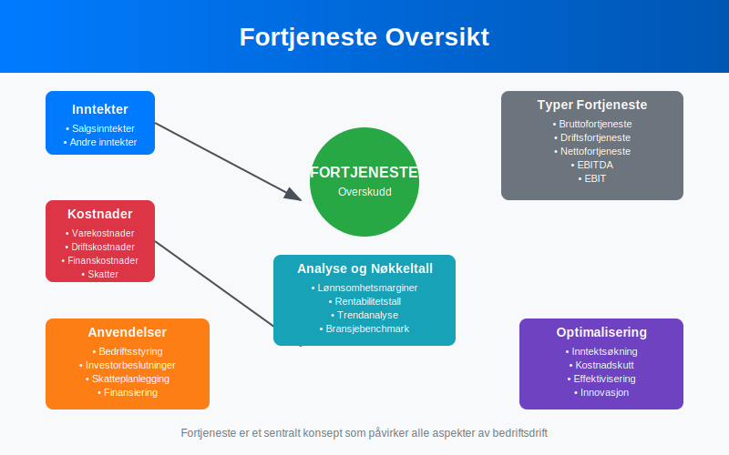
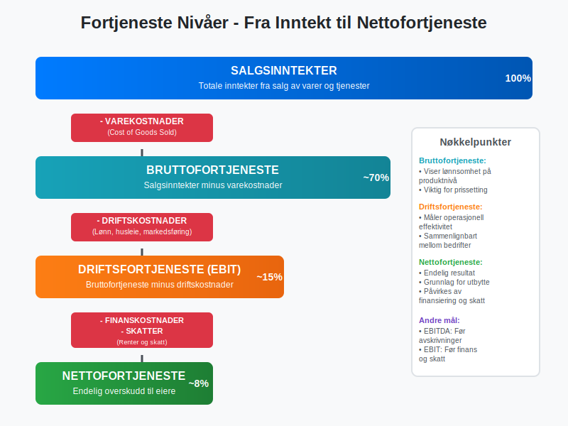
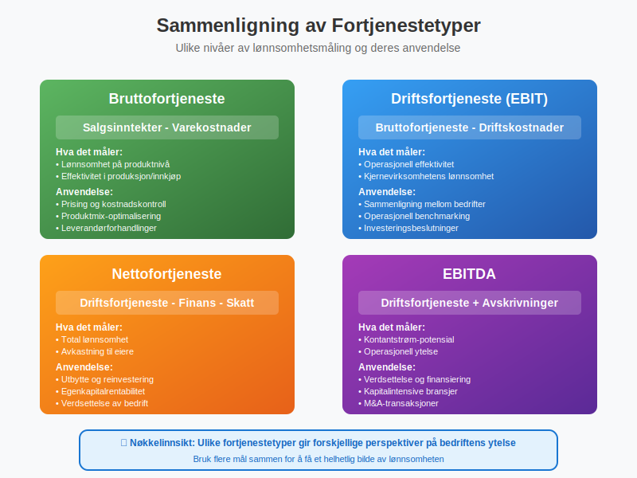
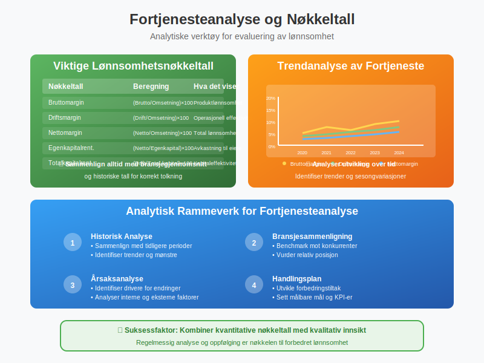
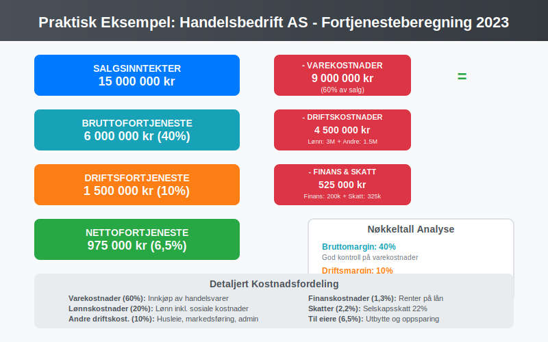
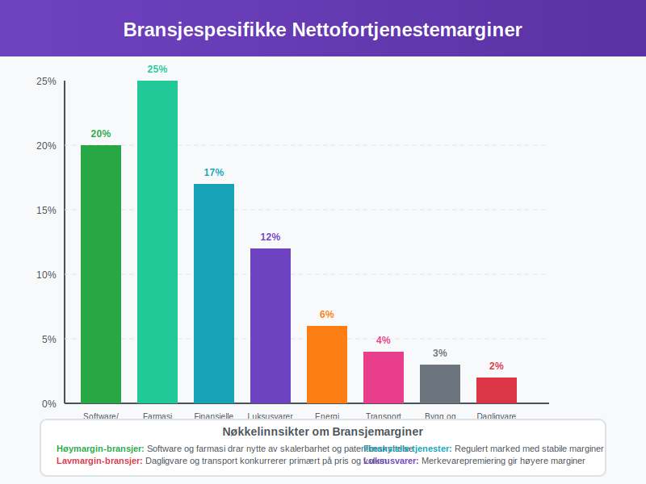
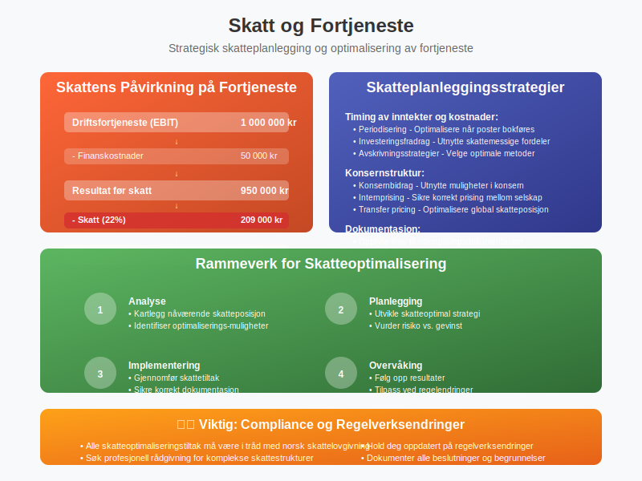
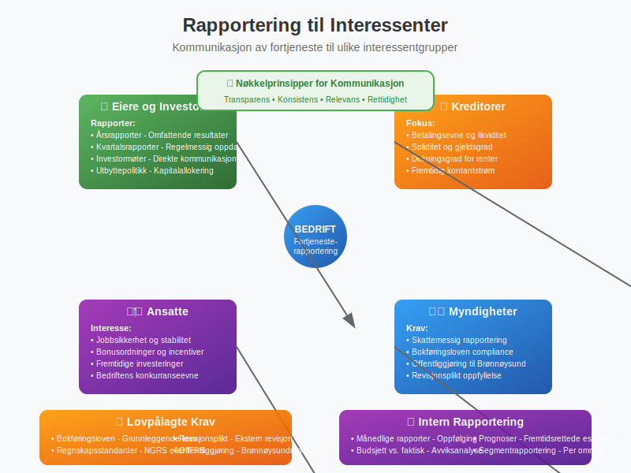
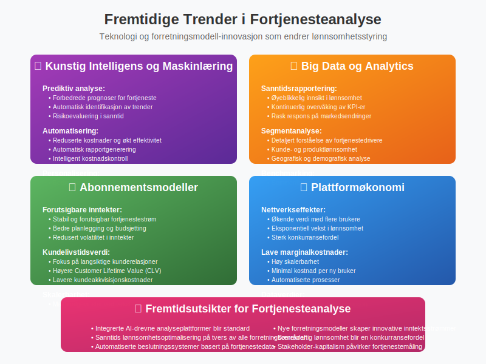

Fortjeneste er et av de mest sentrale begrepene innen regnskap og økonomi. Det representerer det overskuddet en bedrift oppnår etter at alle kostnader er trukket fra inntektene, og er det ultimate målet for de fleste kommersielle virksomheter. Fortjeneste er ikke bare et tall i regnskapet - det er en indikator på bedriftens lønnsomhet, effektivitet og fremtidige bærekraft.

Definisjon og Grunnleggende Forståelse
Fortjeneste, også kalt overskudd eller resultat, er forskjellen mellom bedriftens totale inntekter og totale kostnader over en bestemt periode. Dette begrepet er fundamentalt for å forstå hvordan bedrifter skaper verdi og måler sin økonomiske suksess.
Grunnleggende Formel for Fortjeneste
Fortjeneste = Totale Inntekter - Totale Kostnader
Denne enkle formelen skjuler imidlertid en kompleks struktur av ulike typer inntekter og kostnader som må forstås for å få et fullstendig bilde av bedriftens økonomiske situasjon.
Typer Fortjeneste i Regnskapet
Fortjeneste kan måles på flere nivåer i resultatregnskapet, hver med sin spesifikke betydning og anvendelse.

1. Bruttofortjeneste
Bruttofortjeneste er det første nivået av fortjeneste og viser bedriftens evne til å generere overskudd på kjernevirksomheten.
Beregning:
Bruttofortjeneste = Salgsinntekter - Varekostnader
2. Driftsfortjeneste (EBIT)
Driftsresultat viser fortjenesten fra den ordinære driften før finansielle poster.
Beregning:
Driftsfortjeneste = Bruttofortjeneste - Driftskostnader
3. Nettofortjeneste
Nettofortjeneste er det endelige overskuddet som tilfaller eierne etter at alle kostnader er dekket.
Beregning:
Nettofortjeneste = Driftsfortjeneste - Finanskostnader - Skatter
Sammenligning av Fortjenestetyper
| Fortjenestetype | Beregning | Hva det måler | Anvendelse |
|---|---|---|---|
| Bruttofortjeneste | Salg - Varekostnader | Lønnsomhet på produktnivå | Prising og kostnadskontroll |
| Driftsfortjeneste | Brutto - Driftskostnader | Operasjonell effektivitet | Sammenligning mellom bedrifter |
| Nettofortjeneste | Drift - Finans - Skatt | Total lønnsomhet | Utbytte og reinvestering |
| EBITDA | Drift + Avskrivninger | Kontantstrøm-potensial | Verdsettelse og finansiering |

Faktorer som Påvirker Fortjeneste
Fortjeneste påvirkes av en rekke interne og eksterne faktorer som bedriftsledelsen må forstå og håndtere.
Interne Faktorer
Positive faktorer:
- Effektiv kostnadskontroll - Reduserte driftskostnader
- Produktivitetsforbedringer - Høyere output per ressursenhet
- Innovasjon - Nye produkter med høyere marginer
- Skalering - Stordriftsfordeler ved økt volum
- Prissetting - Optimalisering av priser basert på verdi
Negative faktorer:
- Ineffektive prosesser - Høye driftskostnader
- Overkapasitet - Underutnyttede ressurser
- Kvalitetsproblemer - Økte kostnader og tapt salg
- Dårlig lagerstyring - Høye lagerkostnader og svinn
Eksterne Faktorer
Markedsfaktorer:
- Konkurranse - Prispress og markedsandel
- Etterspørsel - Konjunkturer og trender
- Leverandørforhold - Innkjøpspriser og tilgjengelighet
- Regulering - Nye krav og restriksjoner
Makroøkonomiske faktorer:
- Renter - Påvirker finanskostnader
- Inflasjon - Øker kostnader og påvirker priser
- Valutakurser - Viktig for import/eksport
- Skattepolitikk - Direkte påvirkning på nettofortjeneste
Fortjenesteanalyse og Nøkkeltall
For å forstå og evaluere fortjeneste brukes flere analytiske verktøy og nøkkeltall.

Viktige Lønnsomhetsnøkkeltall
| Nøkkeltall | Beregning | Hva det viser |
|---|---|---|
| Bruttomargin | (Bruttofortjeneste / Omsetning) × 100 | Lønnsomhet på produktnivå |
| Driftsmargin | (Driftsresultat / Omsetning) × 100 | Operasjonell effektivitet |
| Nettomargin | (Nettofortjeneste / Omsetning) × 100 | Total lønnsomhet |
| Egenkapitalrentabilitet | (Nettofortjeneste / Egenkapital) × 100 | Avkastning til eiere |
| Totalkapitalrentabilitet | (Driftsresultat / Total kapital) × 100 | Effektivitet i kapitalbruk |
Trendanalyse av Fortjeneste
Analyse av fortjenestetrend over tid gir verdifull innsikt:
- Vekstrate - Årlig endring i fortjeneste
- Volatilitet - Stabilitet i fortjenestestrøm
- Sesongvariasjoner - Periodiske svingninger
- Konjunkturmønster - Følsomhet for økonomiske sykler
Praktiske Eksempler på Fortjenesteberegning
La oss se på konkrete eksempler fra ulike bransjer for å illustrere fortjenesteberegning.
Eksempel 1: Handelsbedrift AS
Grunnlagsdata for 2023:
- Salgsinntekter: 15 000 000 kr
- Varekostnader: 9 000 000 kr
- Lønnskostnader: 3 000 000 kr
- Andre driftskostnader: 1 500 000 kr
- Finanskostnader: 200 000 kr
- Skatter: 325 000 kr
Beregning:
- Bruttofortjeneste: 15 000 000 - 9 000 000 = 6 000 000 kr (40% margin)
- Driftsfortjeneste: 6 000 000 - 3 000 000 - 1 500 000 = 1 500 000 kr (10% margin)
- Nettofortjeneste: 1 500 000 - 200 000 - 325 000 = 975 000 kr (6,5% margin)

Eksempel 2: Tjenestebedrift AS
Grunnlagsdata for 2023:
- Tjenesteinntekter: 8 000 000 kr
- Lønnskostnader: 4 800 000 kr
- Kontorkostnader: 800 000 kr
- Andre driftskostnader: 600 000 kr
- Finanskostnader: 100 000 kr
- Skatter: 175 000 kr
Beregning:
- Bruttofortjeneste: 8 000 000 kr (ingen varekostnader)
- Driftsfortjeneste: 8 000 000 - 4 800 000 - 800 000 - 600 000 = 1 800 000 kr (22,5% margin)
- Nettofortjeneste: 1 800 000 - 100 000 - 175 000 = 1 525 000 kr (19% margin)
Bransjespesifikke Fortjenestemønstre
Ulike bransjer har karakteristiske fortjenestemønstre basert på deres forretningsmodeller og konkurranseforhold.
Høymargin-bransjer
| Bransje | Typisk Nettomargin | Karakteristikk |
|---|---|---|
| Software/SaaS | 15-25% | Høy skalerbarhet, lave variable kostnader |
| Farmasi | 20-30% | Patentbeskyttelse, høy F&U-investering |
| Finansielle tjenester | 15-20% | Regulert marked, høy kompetansekrav |
| Luksusvarer | 10-15% | Sterk merkevare, premium-prising |
Lavmargin-bransjer
| Bransje | Typisk Nettomargin | Karakteristikk |
|---|---|---|
| Dagligvare | 1-3% | Høy konkurranse, volum-basert |
| Transport | 3-5% | Kapitalintensiv, konjunkturavhengig |
| Bygg og anlegg | 2-4% | Prosjektbasert, høy risiko |
| Energi | 5-8% | Regulert, kapitalintensiv |

Strategier for Fortjenesteoptimalisering
Bedrifter kan implementere ulike strategier for å forbedre sin fortjeneste.
Inntektsoptimalisering
Prisstrategier:
- Verdibasert prising - Pris basert på kundens opplevde verdi
- Dynamisk prising - Tilpasning basert på etterspørsel og marked
- Produktbunting - Kombinere produkter for høyere totalverdi
- Premiumposisjonering - Fokus på kvalitet og service
Salgsoptimalisering:
- Krysssalg - Selge tilleggsprodukter til eksisterende kunder
- Kundesegmentering - Målrettet tilnærming til ulike kundegrupper
- Digitalisering - Effektivisere salgsprosesser
- Kundelojalitet - Redusere kundefrafall og øke livstidsverdi
Kostnadsoptimalisering
Operasjonelle forbedringer:
- Prosessautomatisering - Redusere manuelle oppgaver
- Leverandørforhandlinger - Bedre innkjøpsvilkår
- Energieffektivisering - Redusere driftskostnader
- Kvalitetsforbedringer - Redusere svinn og reklamasjoner
Strukturelle endringer:
- Outsourcing - Fokusere på kjernevirksomhet
- Skalering - Utnytte stordriftsfordeler
- Teknologiinvestering - Langsiktig effektivisering
- Organisasjonsutvikling - Optimalisere struktur og prosesser
Fortjeneste og Skatteplanlegging
Fortjeneste har direkte betydning for bedriftens skattesituasjon og krever strategisk planlegging.
Skattemessige Hensyn
Timing av inntekter og kostnader:
- Periodisering - Optimalisere når inntekter og kostnader bokføres
- Investeringsfradrag - Utnytte skattemessige fordeler
- Avskrivningsstrategier - Velge optimale avskrivningsmetoder
- Konsernbidrag - Utnytte muligheter i konsernstruktur
Internprising:
- Markedsprising - Sikre korrekt prising mellom konsernselskap
- Dokumentasjon - Oppfylle krav til internprisingsdokumentasjon
- Transfer pricing - Optimalisere skatteposisjon globalt

Fortjeneste og Finansiering
Fortjeneste påvirker bedriftens finansieringsmuligheter og kapitalstruktur.
Egenfinansiering
Tilbakeholdt overskudd:
- Reinvestering - Bruke fortjeneste til vekst
- Likviditetsreserver - Bygge finansiell buffer
- Utbyttepolitikk - Balansere utdeling og reinvestering
Ekstern finansiering
Lånekapasitet:
- Soliditet - Høyere fortjeneste styrker balansen
- Dekningsgrad - Evne til å betjene gjeld
- Kredittvurdering - Påvirker lånevilkår
Egenkapitalfinansiering:
- Verdsettelse - Fortjeneste påvirker bedriftens verdi
- Investortiltrekning - Lønnsomhet tiltrekker kapital
- Vekstfinansiering - Støtte ekspansjon og utvikling
Rapportering og Kommunikasjon av Fortjeneste
Korrekt rapportering og kommunikasjon av fortjeneste er kritisk for interessenter.
Regnskapsrapportering
Lovpålagte krav:
- Bokføringsloven - Grunnleggende krav til regnskapsføring
- Regnskapsstandarder - NGRS eller IFRS
- Revisjonsplikt - Krav til ekstern revisjon
- Offentliggjøring - Innlevering til Brønnøysundregistrene
Intern rapportering:
- Månedlige rapporter - Oppfølging av utvikling
- Budsjett vs. faktisk - Avviksanalyse
- Prognoser - Fremtidsrettede estimater
- Segmentrapportering - Analyse per forretningsområde
Kommunikasjon til Interessenter
Eiere og investorer:
- Årsrapporter - Omfattende fremstilling av resultater
- Kvartalsrapporter - Regelmessig oppdatering
- Investormøter - Direkte kommunikasjon
- Utbyttepolitikk - Forklaring av kapitalallokering
Andre interessenter:
- Kreditorer - Dokumentasjon av betalingsevne
- Ansatte - Transparens om bedriftens situasjon
- Kunder - Signalisering av stabilitet
- Myndigheter - Skattemessig rapportering

Utfordringer og Fallgruver
Det er flere vanlige utfordringer og fallgruver knyttet til fortjenesteanalyse og -styring.
Analytiske Fallgruver
Kortsiktig fokus:
- Kvartalstenkning - Ofre langsiktig verdi for kortsiktige resultater
- Kostnadsreduksjoner - Kutte investeringer som påvirker fremtidig vekst
- Prisøkninger - Risikere kundelojalitet for øyeblikkelig fortjeneste
Regnskapsmessige utfordringer:
- Periodisering - Korrekt timing av inntekter og kostnader
- Estimater - Usikkerhet i avsetninger og verdivurderinger
- Engangseffekter - Skille mellom ordinære og ekstraordinære poster
Operasjonelle Utfordringer
Kvalitet vs. kvantitet:
- Vekst vs. lønnsomhet - Balansere ekspansjon og profitabilitet
- Kundetilfredshet - Ikke ofre service for kostnadsbesparelser
- Medarbeiderengasjement - Sikre at fortjenestepress ikke demotiverer
Markedsutfordringer:
- Konkurransepress - Håndtere priskonkurranse
- Teknologiendringer - Tilpasse seg digitale forstyrrelser
- Regulatoriske endringer - Tilpasse seg nye krav
Fremtidige Trender og Utviklinger
Fortjenesteanalyse og -styring utvikler seg kontinuerlig med nye teknologier og forretningsmodeller.
Teknologiske Trender
Kunstig intelligens og maskinlæring:
- Prediktiv analyse - Forbedrede prognoser for fortjeneste
- Automatisering - Reduserte kostnader og økt effektivitet
- Personalisering - Bedre kundetilpasning og prising
Big Data og analytics:
- Sanntidsrapportering - Øyeblikkelig innsikt i lønnsomhet
- Segmentanalyse - Detaljert forståelse av fortjenestedrivere
- Benchmarking - Sammenligning med bransje og konkurrenter
Forretningsmodell-innovasjon
Abonnementsmodeller:
- Forutsigbare inntekter - Stabil fortjenestestrøm
- Kundelivstidsverdi - Fokus på langsiktige relasjoner
- Skalerbarhet - Marginalgevinster ved vekst
Plattformøkonomi:
- Nettverkseffekter - Økende verdi med flere brukere
- Lave marginalkostnader - Høy skalerbarhet
- Dataverdier - Monetisering av brukerinformasjon

Konklusjon
Fortjeneste er mye mer enn bare et tall i regnskapet - det er et omfattende mål på bedriftens evne til å skape verdi og sikre langsiktig bærekraft. Forståelse av de ulike typene fortjeneste, fra bruttofortjeneste til nettofortjeneste, er essensielt for effektiv bedriftsstyring.
Nøkkelpunkter å Huske
- Fortjeneste måles på flere nivåer - hver med sin spesifikke betydning og anvendelse
- Bransjeforskjeller er betydelige - sammenligning må gjøres med relevante referanser
- Både interne og eksterne faktorer påvirker fortjeneste og må håndteres strategisk
- Balanse mellom kortsiktig og langsiktig lønnsomhet er kritisk for bærekraftig vekst
- Teknologi og innovasjon endrer måten fortjeneste skapes og måles på
For bedriftsledere og regnskapsførere er det viktig å ikke bare fokusere på fortjenesteoptimalisering, men også å forstå de underliggende driverne og sikre at strategiene er bærekraftige over tid. Fortjeneste er ikke et mål i seg selv, men et middel for å skape verdi for alle interessenter og sikre bedriftens fremtidige suksess.
Ved å implementere systematiske tilnærminger til fortjenesteanalyse og -styring, kombinert med moderne teknologi og analytiske verktøy, kan bedrifter oppnå både kortsiktig lønnsomhet og langsiktig vekst i et stadig mer konkurranseutsatt marked.